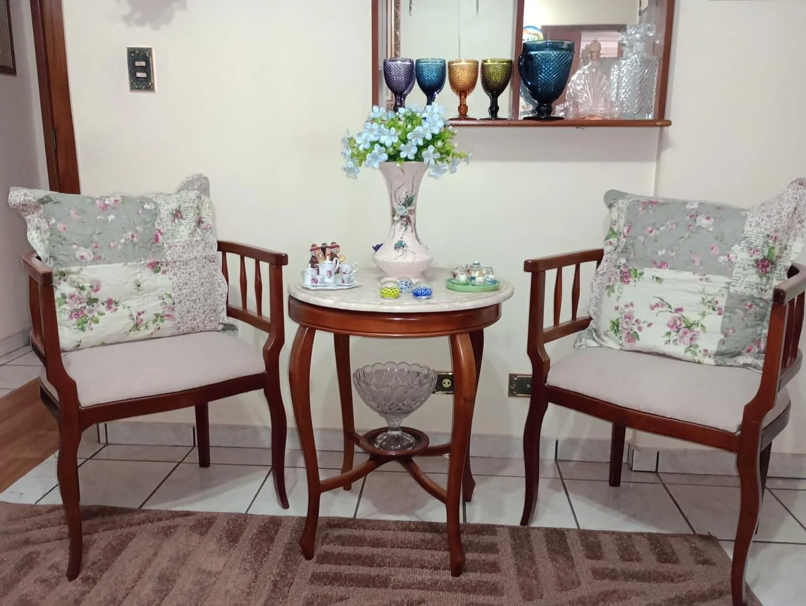
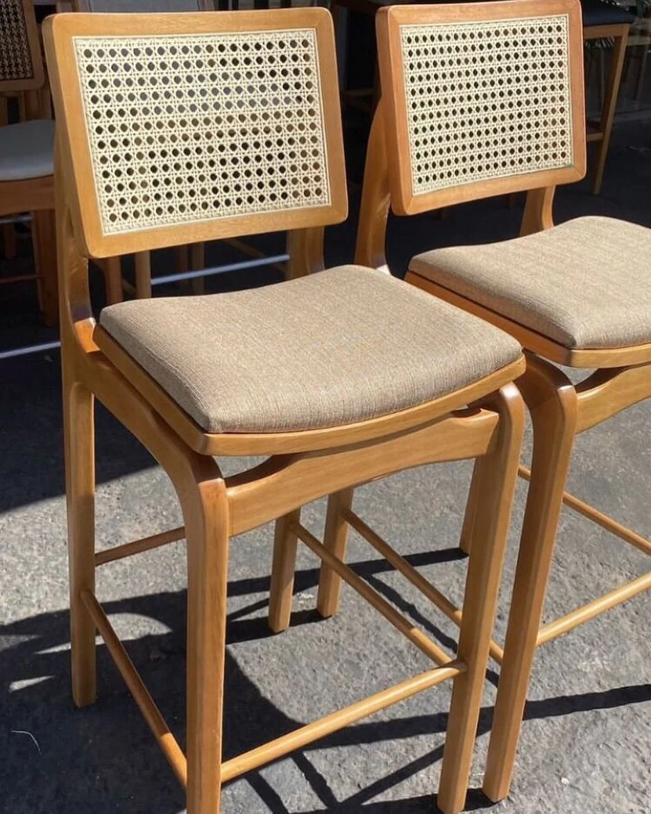
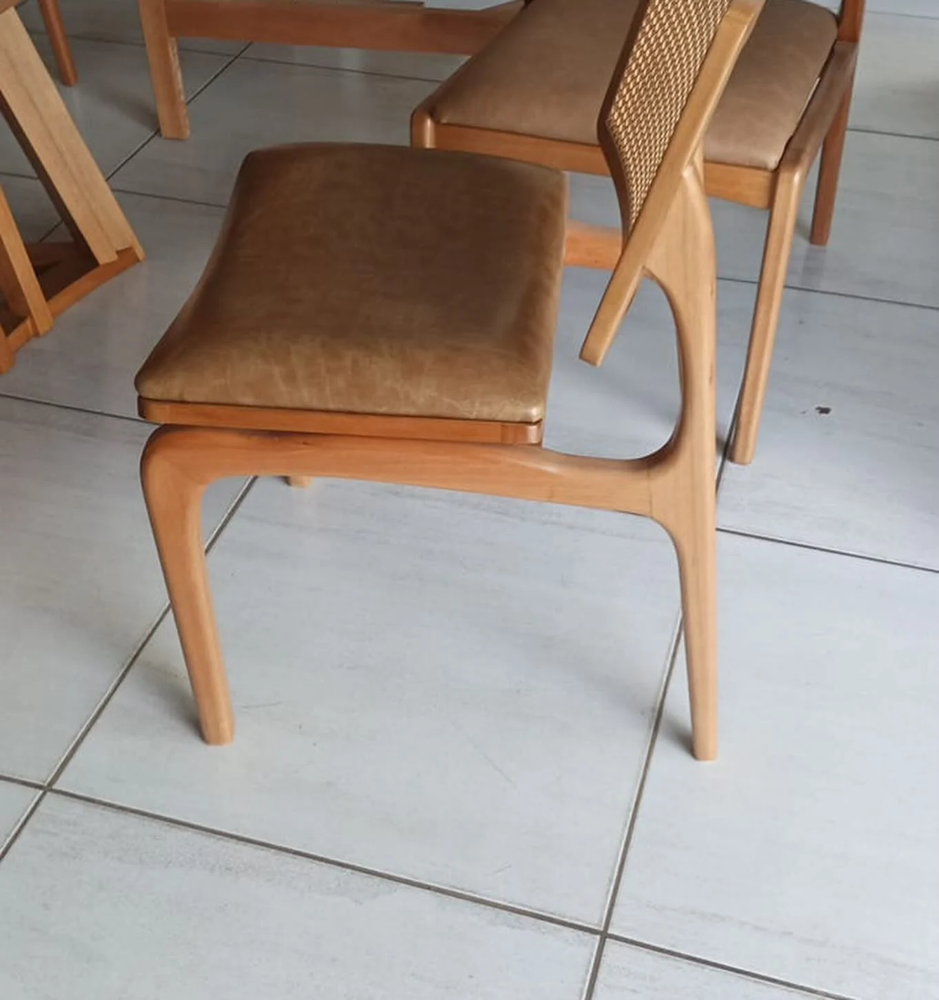
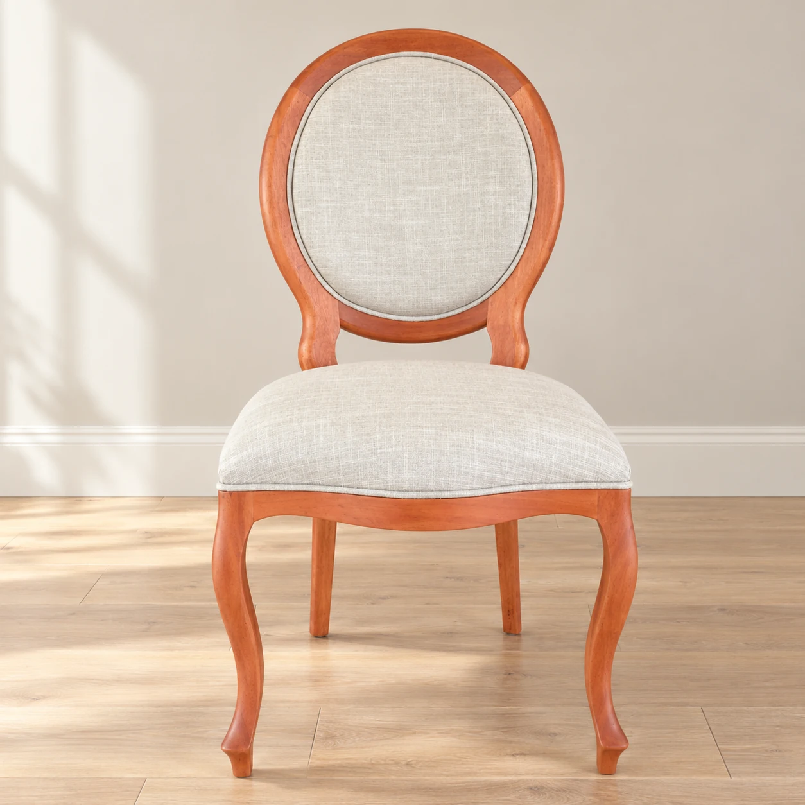
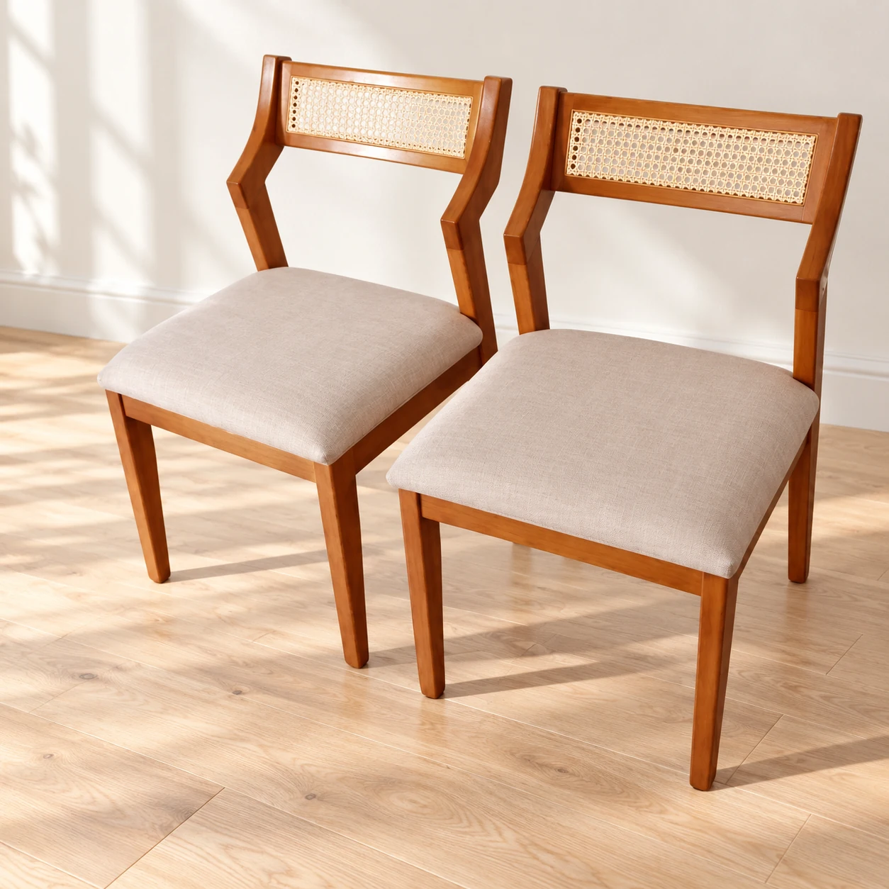
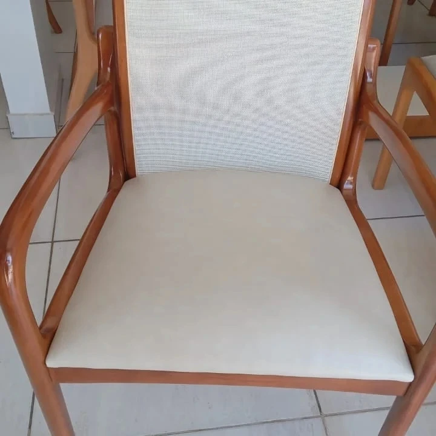
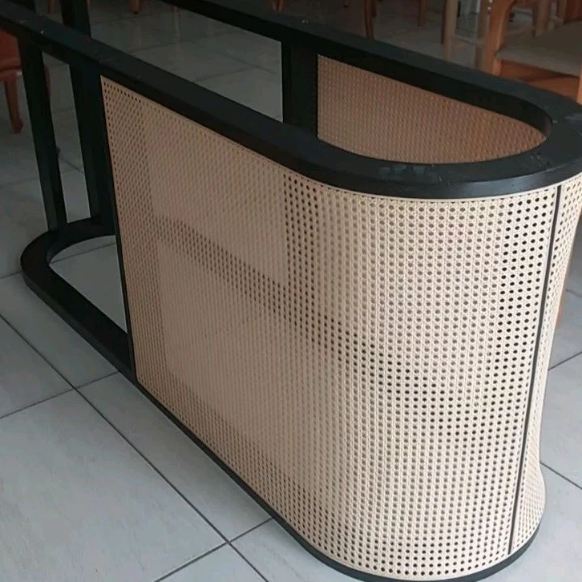
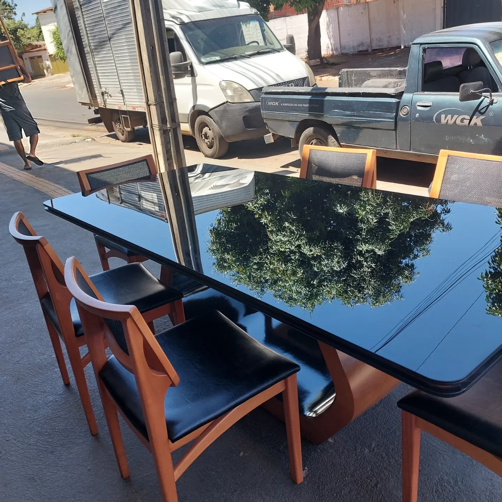
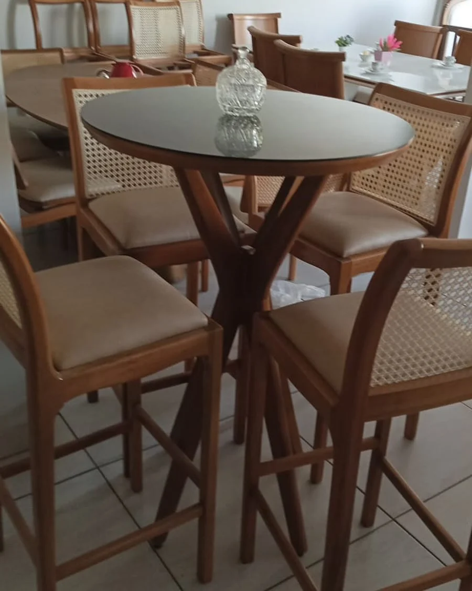

Jantar com mesa de madeira
Conjunto com cadeiras estofadas
Feito do seu jeito, em Goiânia.
Mesas, cadeiras e banquetas para a sua casa.
Madeira, palhinha e estofados para escolher de perto.
Móveis personalizados.
Possibilidades para a vida real.
A SJ Design
Uma mesa de madeira com cadeiras estofadas, banquetas de palhinha ou uma poltrona floral. Conheça referências de mobiliário personalizado publicadas pela SJ Design.
Gostou de uma peça? Selecione a referência, conte as medidas do ambiente e converse com a equipe sobre modelos, tecidos e acabamentos.
Conheça a SJ no InstagramSeleção do portfólio
Veja o desenho das bases, os encostos
e os tecidos de cada referência.
Imagens publicadas pela SJ Design. Abra a peça e confira a publicação de origem.
Conjunto com cadeiras estofadas

Par com mesa de apoio

Assento estofado claro

Vista parcial da estrutura e do estofado

Madeira e revestimento claro

Encosto em palhinha e assento claro

Detalhe do assento e dos braços de madeira

Curvas de palhinha e moldura preta

Vista parcial do conjunto publicado
As imagens apresentam trabalhos e peças do portfólio. Consulte modelos, medidas e disponibilidade com a equipe.

Uma peça. Muitas possibilidades.Personalização
O bom móvel combina com a casa e com quem vive nela. Vamos conversar sobre medidas, materiais e acabamentos para encontrar essa combinação.
Comece pelo espaço: conte as medidas do ambiente e como você quer usar a peça.
Quero personalizar uma peçaUma conversa próxima,
desde a primeira ideia.
Envie referências, as medidas e o ambiente que você quer transformar.
Converse com a equipe sobre modelos, revestimentos e acabamentos.
Consulte o orçamento, as condições e o prazo para o que você escolheu.
Vamos conversar
Uma nova mesa, as cadeiras certas, um espaço com mais personalidade. Sua ideia começa em uma conversa.